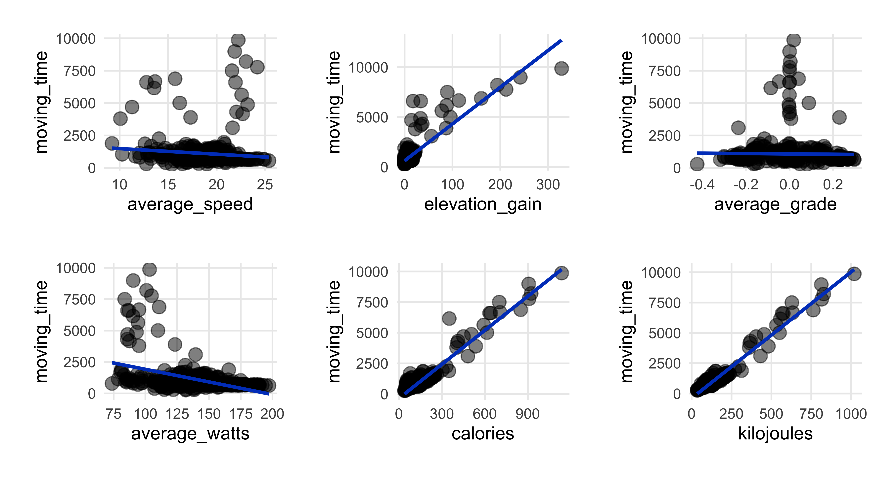
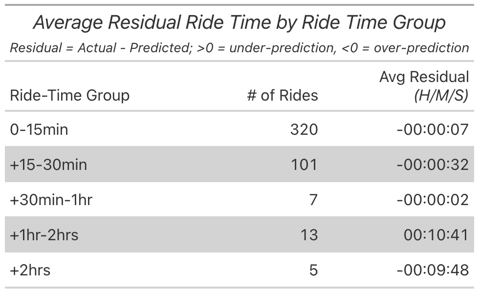

library(gregbio)
my_life <- blev_født(danmark) %>%My Year of Riding Danishly
Gregers Kjerulf Dubrow
CopenhagenR
23 April, 2024

My Year of Riding Danishly
library(gregbio)
my_life <- blev_født(danmark) %>%
voksede_op(USA,
state = “Pennsylvania”,
city = “Philadelphia) %>%
undergrad_degree(film_major) %>%
PhD(education_policy) %>%
career = case_when(
job = faculty ~ FIU, (set_location as Miami, FL),
job = data_analyst ~ UC Berkeley & SFSU,
(set_location as SF Bay Area),
job = career_swerve1 ~ freelance_ESL_teacher,
(set_location as Lyon, FR) 
My Year of Riding Danishly
library(gregbio)
my_life <- blev_født(danmark) %>%
voksede_op(USA,
state = “Pennsylvania”,
city = “Philadelphia) %>%
undergrad_degree(film_major) %>%
PhD(education_policy) %>%
career = case_when(
job = faculty ~ FIU, (set_location as Miami, FL),
job = data_analyst ~ UC Berkeley & SFSU,
(set_location as SF Bay Area),
job = career_swerve1 ~ freelance_ESL_teacher,
(set_location as Lyon, FR)
job = career_swerve2 ~
study_abroad_student_services,
(set_location as København, DK)))
Let’s do some EDA
library(DataExplorer) # for EDA
plot_intro(strava_data)
plot_missing(strava_data)
Let’s do some EDA - Correlations!
strava_data %>%
select(distance_km, elapsed_time, moving_time, max_speed, average_speed, elevation_gain, elevation_loss, elevation_low,
elevation_high, average_grade, max_grade, average_watts, calories, kilojoules) %>%
filter(!is.na(average_watts)) %>%
filter(!is.na(calories)) %>%
plot_correlation(maxcat = 5L, type = "continuous", geom_text_args = list("size" = 4))
So what do we see here?
Most of the relationships are positive, some with expectedly near 1:1 relationships, such as distance (in km) and total time for the ride.
Average speed is positively correlated with distance but the relationship is only at 0.14, the weakest of all positive associations with distance. Average speed correlations are low…near 0, for total elevation gain and negative the higher the average grade of the ride.
Averge watts, or weighted power output for the ride, has mostly negative correlations. Longer rides in time or distance meant a lower average power per ride segment.
We’ll keep these correlations in mind when looking at the scatterplots and then later considering the regression results.
More EDA - Better scatterplots!
## 1st plot call - distance as y axis
patchwork::wrap_plots(
map2(c("elapsed_time", "moving_time", "average_speed","average_watts", "calories", "kilojoules"),
c("distance_km", "distance_km", "distance_km", "distance_km", "distance_km", "distance_km"),
~plot_scatter_lm(data = strava_activities_rides, var1 = .x, var2 = .y, pointsize = 3.5) +
theme(plot.margin = margin(rep(15, 4)))))
Confirms what we saw in the correlation heatmap & displays ride distributions.
Positive and almost 1:1 relationships between distance and both time measures, elapsed and moving.
Negative association with watts that we saw in the correlations. Making a note to take a closer look at how much an effect watts has later on in the regression section.
Note the outlier ride of 60km and an elapsed time of more than 15,000 seconds…more about that one later.
A few more scatterplots



- Average speed decreases as ride time goes up (top left plot)…makes sense.
- Expended more energy (calories & kilojoules) as ride time increased (top left).
- Speed & watts had strong relationship (top right), as we saw in correlation heatmap.
- Surprised energy output has weak association with average speed; perhaps here in flat Denmark there’s only so much energy burn I can hit.
- Strong relationship between kilojoules & elevation.
Plotting the residuals
- Slight deviation from the blog post, where I plotted predicted v actual. Here I want to plot the residuals (actual minus predicted) against the actuals to check for heteroscedasticity (variance of errors not constant).


Plotting the residuals - Watts model

About that last ride…

About that last ride…
- Have you seen this bike?
- Vintage Univega, red…last seen in Nørrebro, near Nørrebro Station